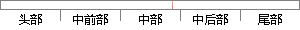

用户点击电子导览后显示的主界面如下：
片段位置图

相似结果|
相似片段 1：承载用户优化实现界面3点dt“计算”按钮后，显示计算结果界面削512线路承找川户优化实现界面4524方案查询系统提供已有^案及优化后方案的查询功能，其界面如下图所示图513线路承载用户查啕实现界面I晴尔滨_J_=程人学硕十学位论文点击“图示”按钮后，显示如下界面＼／形?
相似片段 2：的查询，住宅家电状态的控制，住宅视频监控显示。页面如下图 3.10所示。图 3.10 智能住宅主界面导航界面点击上面“住宅家电状态控制”按钮，就进入 control.html页面，用户可以通过点击上
相似片段 3：的相关信息。显示页面如下图所示：f薹蒴{矗：虹赢面荔磊丽丽一??’一一?一?——五蕊一磊用户名用户身份姓名性别电话酗职务edd男33@sina+corn图5．12查看职工信息界面如果点击c‘修改
相似片段 4：这样，结合功能一中的故障显示，再通过观察现场视频，用户就可以很快定位故障点，尽量避免生产事故的发生。登陆界面现场视频监控皮带秤信息监控57登陆界面如下图 6-2所示：图 6-2 登陆界面用户输入上位
相似片段 5：，并提示“添加成功”，否则会提示相关错误信息。添加页面如下图所示：1地址i憾 ‘’}觳图5．7新增联系人界面如果点击“查看”链接，则显示所选联系人的相关信息。显示页面如下图所示：图5-8查看联系人界面如果
相似片段 6：添加页面如下图 5-3所示：图 5-3新增会议界面如果点击“查看”链接，则显示所选会议的相关信息。显示页面如下图 5-4所示：图 5-4查看会议界面46如果点击“修改”链接，则显示所要修改的会议信息
|
※ 片段修改建议 ※
近似词参考：- 显示：表现
- 如下：以下
系统自动生成语句：用户点击电子导览后表现的主界面以下：
注：本片段修改建议为系统自动生成，仅供参考。